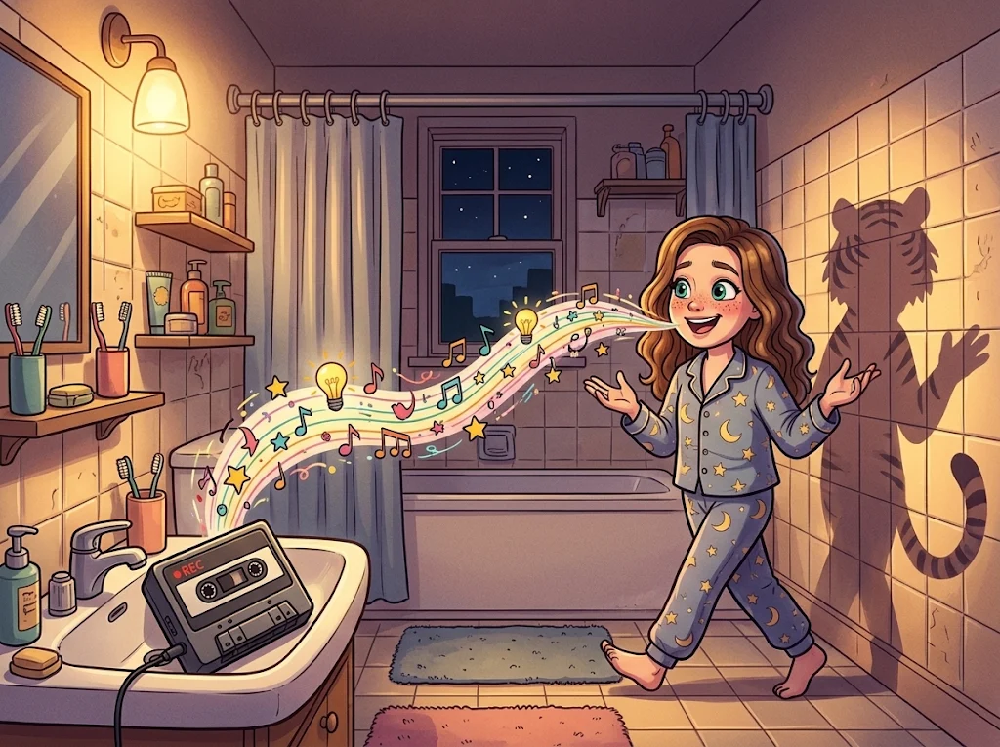
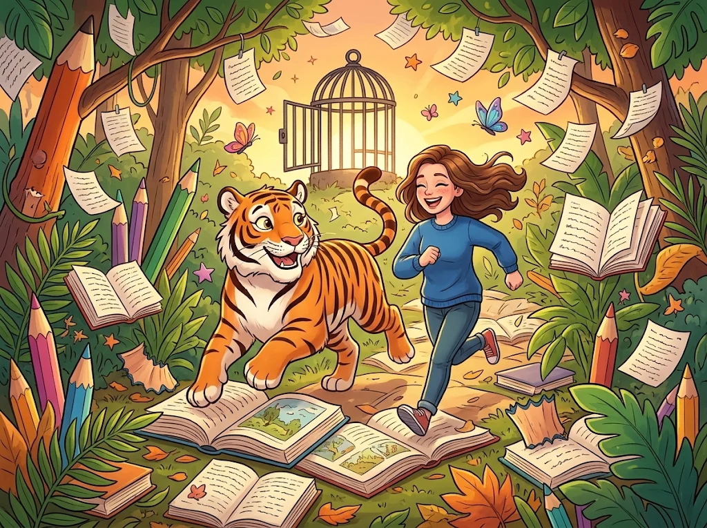
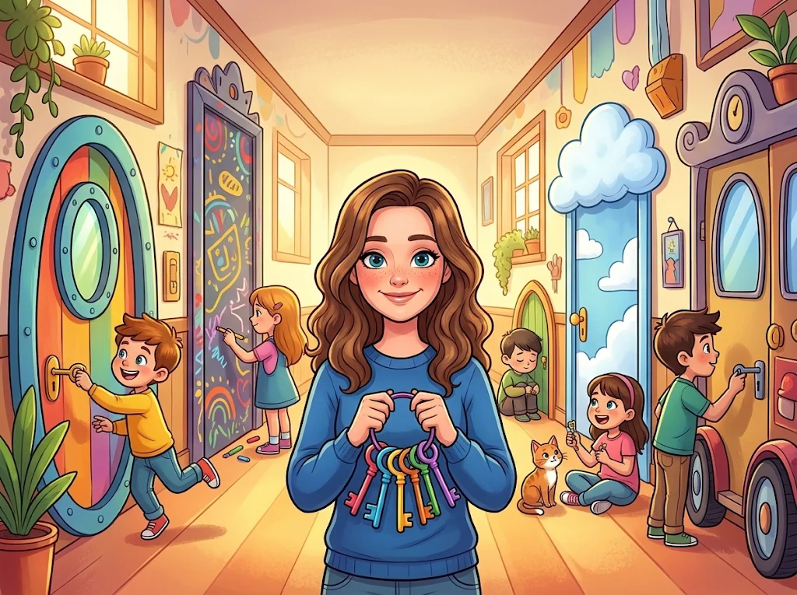
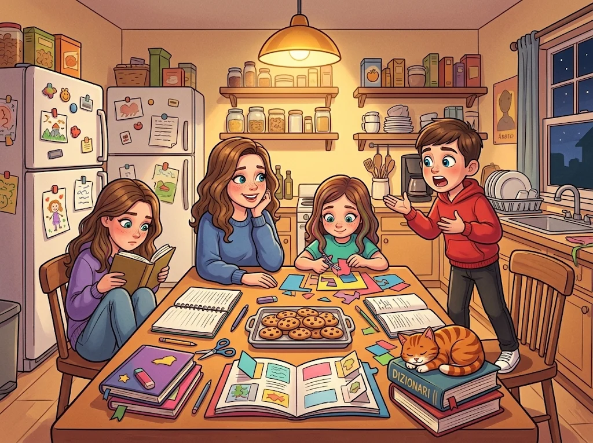
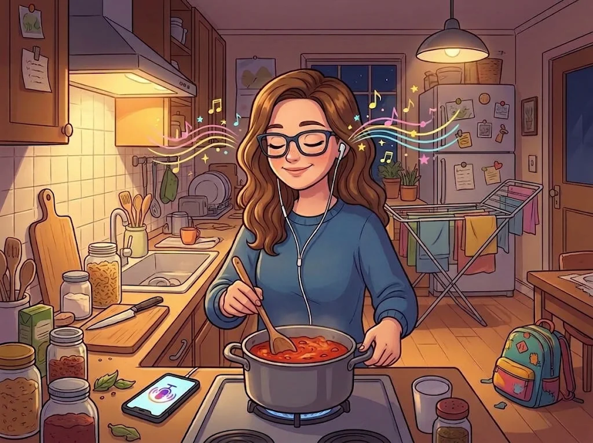
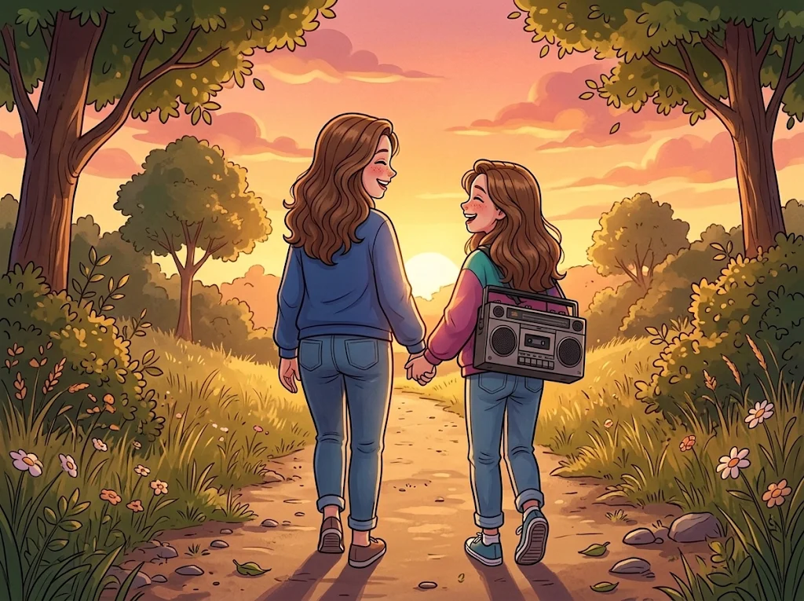

Avevo tredici anni. Prima superiore, primo tema. Da fare a casa.
Me lo ricordo ancora, quel foglio. Bianco, a righe, con il margine a sinistra. Era tardi, e io ero ancora lì, con la luce accesa e la penna in mano.
Mia madre gridava di spegnere la luce, che i miei fratelli dovevano dormire.
Io non avevo scritto una riga.

E non perché non avessi niente da dire. Era il contrario. Di idee ne avevo tante, forse troppe. Arrivavano tutte insieme, si spingevano, si pestavano i piedi, ognuna voleva uscire per prima. E così non usciva nessuna. Si ingorgavano lì, da qualche parte tra la testa e la penna, come le macchine in tangenziale alle sei di sera.
Da fuori, però, tutto questo non si vedeva. Da fuori si vedeva una ragazzina ferma davanti a un foglio vuoto.
Nessuno mi chiese cosa mi bloccasse. Mi dicevano: "Comincia."
Come se cominciare fosse la parte facile.
"Comincia" è una parola che noi adulti diciamo con le migliori intenzioni. La diciamo per incoraggiare, per dare una spinta. Ma a chi è bloccato suona in un altro modo. Suona come: gli altri ci riescono, tu perché no? E tu quella domanda te la stai già facendo da sola, da un pezzo, e non hai la risposta.
Il registratore
A casa avevamo un vecchio registratore, di quelli con le audiocassette. Il tasto rosso per registrare, da schiacciare insieme a quello del play, che se sbagliavi cancellavi la canzone preferita di qualcuno e in casa scoppiava la guerra.
Non so dire come mi venne l'idea. So che quella sera, con la luce da spegnere e i fratelli da lasciar dormire, lo presi e mi chiusi in bagno.
Il registratore lo appoggiai nel lavandino. E io cominciai a camminare. Avanti e indietro, in sei metri quadri, come una tigre in gabbia. E a parlare. Da sola, ad alta voce, tutte le idee in disordine, come venivano. Senza bella calligrafia, senza margini, senza nessuno che guardasse.

E a voce le idee uscivano. Tutte. Quelle che sul foglio facevano a botte, a voce si mettevano in fila da sole, una dietro l'altra, come se avessero sempre saputo dove andare.
Poi riavvolsi il nastro e riascoltai. La mia voce registrata mi faceva un effetto stranissimo, come a tutti, credo. Ma mentre riascoltavo prendevo appunti. Fermavo, scrivevo, mandavo avanti. E piano piano sul foglio compariva una cosa che non avevo mai visto prima: uno schema. Il mio.
Il tema, alla fine, lo scrissi.
E così ho scoperto la mia porta: io capisco mentre parlo!
Quello che ho capito dopo
Per tanto tempo ho pensato che quella del registratore fosse una stranezza mia. Una di quelle cose che fai di nascosto e non racconti, perché "gli altri mica ne hanno bisogno".
Ci ho messo anni, e parecchi bambini, a capire che non era una stranezza. Era un metodo. Avevo fatto da sola, a tredici anni e con un registratore mezzo scassato, quello che nessun adulto intorno a me aveva pensato di fare: mi ero chiesta dove si inceppava il meccanismo, e avevo cercato un'altra strada per arrivare nello stesso posto.
E qui devo dire una cosa, perché ci tengo. Gli adulti che mi dicevano "comincia" non erano cattivi. Facevano quello che potevano con quello che vedevano. E quello che vedevano era una ragazzina che non scriveva. Il resto, l'ingorgo, la tangenziale, le idee che si pestavano i piedi, stava tutto dentro. E quello che sta dentro, se nessuno lo chiede, resta lì.
Da quel bagno a qui
Allora non lo sapevo, ma quella sera in bagno è cominciato tutto.
Perché una che capisce mentre parla, prima o poi, finisce a parlare con i bambini. A spiegare una cosa in dieci modi diversi finché non trova quello giusto, e intanto la capisce meglio anche lei. Finisce a fare la tata, poi l'educatrice, poi la mamma che fa scuola al tavolo di cucina.
E finisce a scrivere un blog che in realtà è una chiacchierata, a mettere in piedi un sito, a costruirsi una vita intera intorno a una domanda sola: qual è la porta di questo bambino?
Quanto alla tigre, in gabbia non c'è più tornata. Questo blog è diventato la sua giungla: qui può correre libera, avanti e indietro quanto le pare, e nessuno le grida di spegnere la luce.

Le porte degli altri
Da allora di porte ne ho viste tante. E non solo quelle dei piccoli.
Perché in questi vent'anni non ci sono stati solo pulcini e pisolini. Ci sono stati anche i pomeriggi dei grandi: i compiti al tavolo di cucina di qualcun altro, le interrogazioni da preparare, i temi che non partivano. E ci sono stati ragazzi che studiavano a casa, in istruzione parentale, quando io di figli non ne avevo ancora e non immaginavo che un giorno quella scelta sarebbe stata la nostra.
Li accompagnavo e basta. Solo dopo ho capito che stavo facendo le prove generali.
È una delle cose belle di questo mestiere: dopo un po' le porte cominci a collezionarle.

C'è il bambino che pensa solo se si muove. Lo metti seduto e si spegne, lo lasci camminare intorno al tavolo e ti recita la lezione intera, con le virgole. C'è quello che deve disegnare prima di scrivere, perché finché una cosa non la vede non riesce a dirla. C'è quella che ha bisogno di raccontarla a qualcuno, a te, al gatto, al fratello che non ascolta, e solo dopo riesce a metterla sul quaderno. E c'è quello che ha bisogno che tu stia zitta. Che tu ti sieda lì vicino, senza suggerire, senza sospirare, senza guardare l'orologio. Per me, lo confesso, questa è la porta più difficile da tenere aperta.
Con tre figli a casa le ho viste tutte da vicino. Tre bambini, stessa mamma, stesso tavolo, stesso argomento: tre porte diverse. Se c'è una cosa che l'istruzione parentale mi ha tolto per sempre è l'illusione che esista un modo giusto di imparare. Esiste il modo di quel bambino lì, quel giorno lì. Il giorno dopo, a volte, è già cambiato, e si ricomincia a cercare.
All'inizio questa cosa mi faceva impazzire. Adesso è la parte del lavoro che mi piace di più.
Mi presento, per chi arriva adesso
Sono Maria Silvia Santi, ma per tutti sono Mary. Vivo a Bologna, sono educatrice e lavoro con i bambini da più di vent'anni.
Per quindici di questi anni ho fatto la tata. O meglio: ho messo in piedi un servizio di babysitting condiviso, Tata Mary, nato nel 2011, e poi un'associazione, 4mums, per le famiglie. Anni di pulcini, di pappe, di pisolini, di genitori che arrivano di corsa col fiatone e con una domanda sulla porta: "Ma è normale che faccia così?"
Quella domanda l'ho sentita migliaia di volte. E a un certo punto ho cominciato a farmela anch'io, da mamma.
Perché nel frattempo sono arrivati i miei tre figli. Li ho presentati qui sul blog come i miei tre uragani, e non ho esagerato. Siamo una famiglia neurodivertente: lo scrivo così, con la "t", perché ci divertiamo davvero, anche quando arranchiamo. E arranchiamo, eccome.
Da qualche anno i miei figli studiano a casa con me, in istruzione parentale. Vuol dire che la scuola la facciamo noi: al tavolo della cucina, al parco, al museo, in mezzo ai libri della taverna. Vuol dire anche che tutti i materiali li preparo io, uno per uno, su misura per loro. Da lì sono nati i lapbook, le schede, i quaderni, le agende, i libri. E da lì è nato Life School Family, che è il nome che ho dato a tutto questo: la vita, la scuola e la famiglia nello stesso posto, che poi è casa nostra.

Ci tengo a specificare una cosa. Io non sono una psicologa e non sono una neuropsichiatra. Non faccio diagnosi e non ne farò mai, né qui né altrove. Sono un'educatrice e una mamma. Quello che vi porto è quello che ho visto, quello che ho studiato e quello che ho sbagliato. Soprattutto quello che ho sbagliato, che di solito è la parte più utile.
Educatrice fuori, mamma dentro
Una cosa ve la devo confessare subito, così partiamo puliti.
Quando sono diventata mamma facevo l'educatrice da anni. Avevo studiato, avevo visto passare decine di bambini, sapevo cosa dire ai genitori sulla porta. Ero convinta di arrivare preparata.
Non lo ero per niente.
Perché con i figli degli altri hai la distanza giusta. Vedi, capisci, aspetti. Con i tuoi no. Con i tuoi hai la stanchezza, la paura, la cena da fare, e quella vocina che ti chiede se stai sbagliando tutto. Con i tuoi "comincia" ti scappa di bocca prima ancora che tu te ne accorga. L'ho detto anch'io. Più di una volta, e con il tono sbagliato.
Per questo qui non troverete mai una che parla dall'alto. Io le cose le so da educatrice e le sbaglio da mamma, come tutte. La differenza, se c'è, è che dopo torno indietro a guardare cosa è successo. E adesso lo faccio ad alta voce, insieme a voi.
Nel tempo che avanza, che è poco e quasi sempre di notte, scrivo anche romanzi. Ma quella è un'altra storia, e ve la racconto un'altra volta.
Quello che c'è già, qui sul blog
Se siete nuovi, sappiate che in questo blog c'è già un bel po' di vita.
C'è la nostra odissea verso la diagnosi, quando l'intuizione di una mamma valeva più di mille pareri e nessuno voleva sentirla. C'è il papà, la mia roccia, e il suo posto in una famiglia come la nostra. C'è la Pasqua tra il Big Bang, le lasagne e il diritto di rifugiarsi sotto il tavolo. C'è Beatrice, che ha scelto il tatami e la sua dignità quando l'eccellenza stava diventando veleno. C'è la storia per cui in istruzione parentale la colpa è sempre della mamma, e perché abbiamo deciso che va benissimo così.
E poi ci sono gli articoli dove provo a spiegare, con parole da cucina e non da convegno, cosa sono la plusdotazione, i DSA, l'ADHD, la neurodiversità. Uno si intitola "DSA: non è pigrizia, è un cervello che chiede un'altra porta". Quando l'ho scritto non ci avevo fatto caso. Rileggendolo adesso, mi sa che dentro c'era già la ragazzina col registratore.
Perché da oggi il blog ha una voce
Quel registratore, a pensarci bene, non l'ho mai messo via.
Da oggi gli articoli del blog si possono anche ascoltare. Qui sulla pagina, con l'altoparlante in alto, e come podcast su Spotify, Amazon Music e dove ascoltate di solito.
I motivi sono tre, e ve li dico in ordine di importanza. Per me, almeno.
Il primo: c'è chi capisce leggendo e chi capisce ascoltando. Io l'ho scoperto a tredici anni, a mie spese. E sarebbe ben strano che proprio io, che passo le giornate a preparare materiali inclusivi perché ogni bambino trovi la sua porta, lasciassi ai grandi una porta sola. Ci sono mamme e papà per cui leggere un articolo lungo è una fatica vera. Lo so perché me l'avete scritto. Questo è per voi, prima che per chiunque altro.
Il secondo: le giornate. Le vostre le conosco, perché sono le mie. Un articolo lo leggi se riesci a sederti, e sedersi, in certe case, è un lusso da festa comandata. Una voce invece ti segue. Mentre cucini, mentre guidi, mentre stendi i panni, mentre aspetti fuori dalla palestra con il motore spento e dieci minuti tutti tuoi.

Il terzo: il tono. Quando scrivo, voi non lo sentite se sto sorridendo. Non sentite l'ironia, non sentite quando mi fermo un attimo perché una cosa mi tocca ancora. E io sono una che scherza tanto, anche sulle cose serie. Soprattutto sulle cose serie. A voce si capisce. Per iscritto, ogni tanto, qualcuno si è offeso.
La frase che sentirete ogni volta
Ogni puntata si aprirà e si chiuderà con le stesse parole. Un piccolo rito, come la sigla dei cartoni quando eravamo piccoli, che bastavano due note e sapevi di essere a casa.
Le parole sono queste: capirli col cuore del bambino che eravamo.
Ci tengo a spiegarle, perché non sono uno slogan. Sono il modo in cui lavoro.
Davanti a un bambino che non fa, non parla, non parte, noi adulti abbiamo una fretta tremenda di trovare la spiegazione. È pigro. Non si impegna. È intelligente ma non si applica. Lo fa apposta. Quella fretta la conosco bene, ce l'ho anch'io. Non la diciamo per cattiveria: la diciamo perché sono le spiegazioni più a portata di mano, e perché quando sei stanca, sono le sette di sera e il compito è ancora lì, la prima spiegazione che passa la prendi al volo.
Solo che quasi mai è quella giusta.
Io ho un trucco, se così si può chiamare. Quando non capisco un bambino, smetto di guardarlo da adulta. Torno indietro. Mi chiedo: e io, alla sua età? Cos'era che non riuscivo a fare, e che nessuno capiva? Cos'era che non sapevo dire?
Provateci. Magari era la pancia che faceva male la domenica sera. Magari era la mano che non si alzava anche se la risposta la sapevate. Magari era un "non mi va" che voleva dire tutt'altro, e ancora oggi non sapreste bene tradurlo.
Quel bambino lì ce l'abbiamo ancora tutti, da qualche parte. E si ricorda benissimo com'era. È il miglior interprete che abbiamo, e lavora gratis.
A quella ragazzina di tredici anni non serviva qualcuno che le dicesse "comincia". Serviva qualcuno che le chiedesse: cosa succede lì dentro?
È questo che proviamo a fare qui. Ci fermiamo a chiederci cosa c'è in quello che un bambino non sa ancora dire. A volte nemmeno da adulto.
Per chi è
Questo blog, e adesso questo podcast, non sono solo per chi fa istruzione parentale. Anzi.
Sono per la mamma che ogni pomeriggio si siede accanto a un quaderno e a un figlio che non parte, e non sa più da che parte prenderlo. Per il papà che ha letto la diagnosi tre volte e ha capito una riga su dieci. Per la maestra che ne ha venticinque davanti e ne ha uno che non le dà pace, proprio perché ci tiene. Per gli insegnanti di sostegno, che spesso sono gli unici a farsi la domanda giusta. Per i nonni, che certe parole ai loro tempi non esistevano e adesso se le ritrovano a tavola. Per le educatrici e le tate, che sono state casa mia per quindici anni.
E sono anche per chi quel bambino lo è stato. Per chi è cresciuto sentendosi dire "potresti, se solo volessi" e ancora oggi, a quarant'anni, davanti a un modulo da compilare sente lo stomaco che si chiude. Se vi riconoscete, benvenuti. Qui si parla anche di voi.
Se poi una puntata vi fa venire in mente una domanda, o una storia, scrivetemi. Rispondo io, di persona, magari non subito: di solito tra una lezione di storia e l'impasto dei biscotti.
Cosa non troverete, e cosa sì
Non troverete giudizi. Né sui bambini né su di voi. Se siete arrivati fin qui, vuol dire che vi state facendo delle domande, e chi si fa delle domande ha già fatto più di metà della strada.
Non troverete soluzioni magiche. Niente "cinque passi per", niente metodi infallibili. Non perché io li tenga nascosti: è che non esistono. Ogni volta che qualcuno ve ne vende uno, vi sta vendendo anche il senso di colpa per quando non funzionerà.
Non troverete la famiglia perfetta. La nostra non lo è e non ci tiene a sembrarlo.
Troverete delle storie. Le nostre, e quelle dei bambini che ho incontrato in vent'anni, raccontate in modo che nessuno si possa riconoscere tranne voi, quando ci vedrete dentro il vostro. Troverete un po' di scienza spiegata semplice. Troverete idee da provare domani mattina, senza comprare niente.
E qui ci tengo a essere chiara. I materiali che usiamo a casa, quelli che preparo per i miei figli, a un certo punto ho deciso di venderli. Perché alla fine questo è il mio lavoro, e perché chi li ha comprati mi scrive che gli sono utili. Ma ce ne sono anche tanti gratuiti, e sono lì apposta: prendeteli.
E troverete, spero, un posto dove tirare il fiato.
Alla fine di ogni puntata vi lascerò una domanda. Non c'è la risposta giusta e non la correggo. Serve a voi, per il resto della giornata.
Più avanti
Per ora si parte da qui: gli articoli del blog, uno per uno, con la mia voce.
Più avanti arriverà qualcosa di nuovo, pensato apposta per essere ascoltato e guardato. Ci sto lavorando da un po', nella taverna di casa, in mezzo ai libri. Non vi dico altro, se non che c'entra un foglio bianco. E che la ragazzina col registratore, lì, tornerà a trovarci.
Intanto mettetevi comodi. O restate in piedi a girare il sugo, va bene uguale.

E prima di salutarci, la domanda di oggi.
Io capisco mentre parlo. E voi? Qual è il vostro modo di capire le cose?
Forse l'avete scoperto subito. Forse ci avete messo anni, e tanta fatica. O forse non ve lo siete mai chiesti, fino a oggi.
Va bene in tutti e tre i casi: capita, ed è giusto così.
Qualunque risposta vi siate dati, oggi abbiamo provato a guardare quello che di solito non si vede. Perché è lì, in quello che ci sfugge, che il giudizio lascia il posto alla comprensione.
Ed è così che proviamo a capirli: col cuore del bambino che eravamo.
Alla prossima!